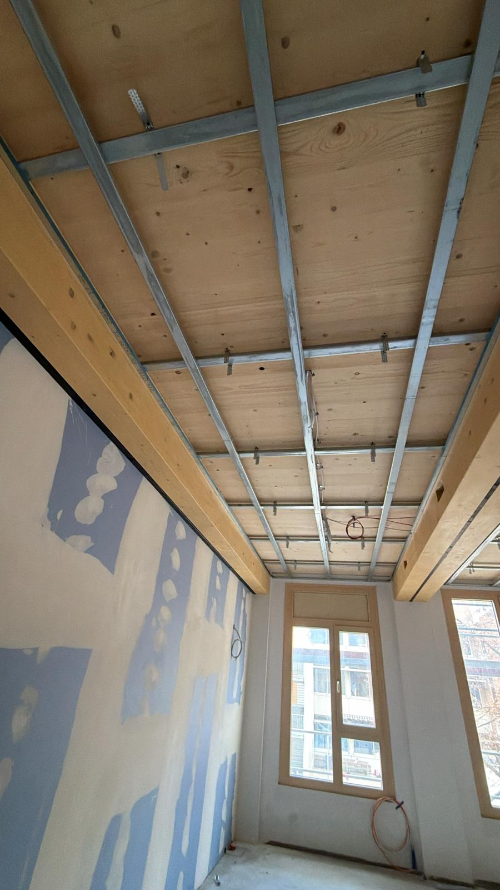
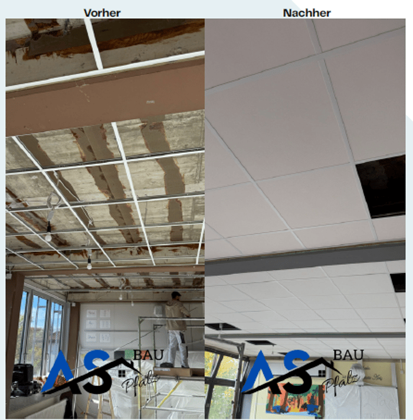
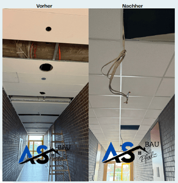
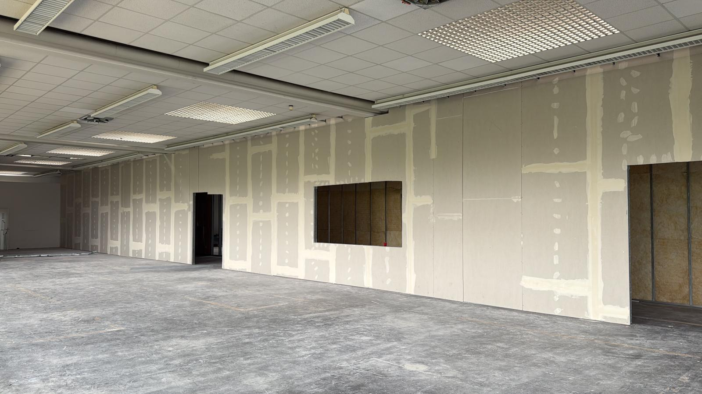
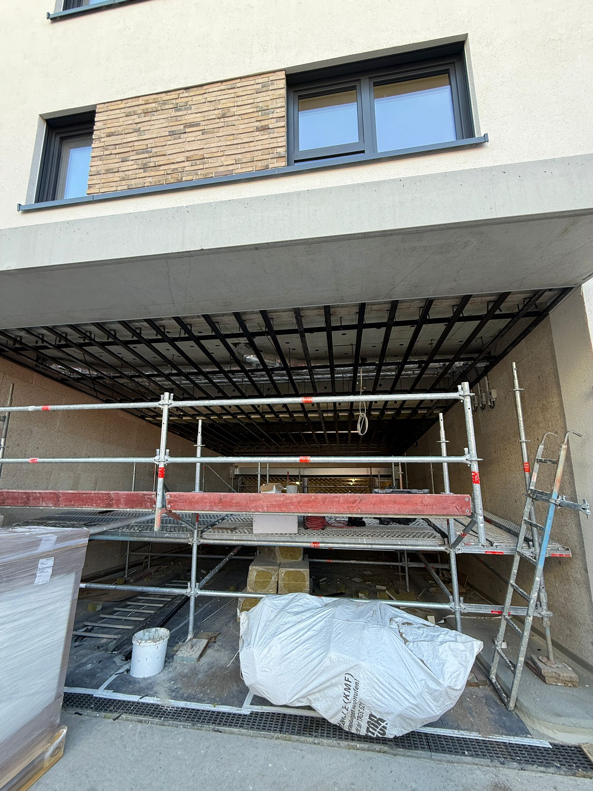
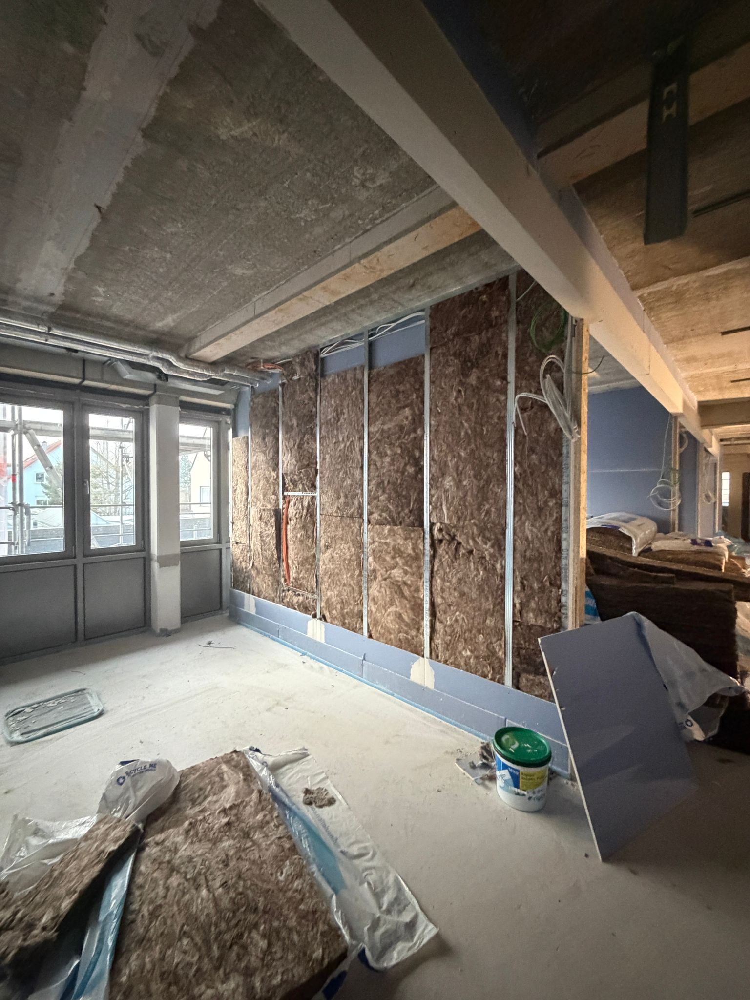

Brüder-Grimm-Schule, Ludwigshafen
Trockenbau / Q3-Spachtelung / Deckenkonstruktion
Trockenbauarbeiten, Q3-Spachtelarbeiten sowie Deckenkonstruktionen im Rahmen von Ausbau- und Innenarbeiten.
.svg)
REFERENZEN
Ein Einblick in typische Projektarten, Leistungen und Einsatzbereiche von AS Bau Pfalz im Innenausbau.
AUSGEWÄHLTE REFERENZEN
Nachfolgend finden Sie beispielhafte Referenzbereiche, in denen wir regelmäßig tätig sind.

Trockenbau / Q3-Spachtelung / Deckenkonstruktion
Trockenbauarbeiten, Q3-Spachtelarbeiten sowie Deckenkonstruktionen im Rahmen von Ausbau- und Innenarbeiten.

Trockenbau / Akustikbau / Öffentliche Gebäude
Trockenbau- und Akustikbauarbeiten in einem öffentlichen Gebäude mit sauberer und strukturierter Ausführung.

Rasterdecken / Demontage / Deckensysteme
Rasterdecken, Demontage von Bestandsdecken sowie Einbau neuer Deckensysteme im schulischen Bereich.
WEITERE PROJEKTBEREICHE
Neben Einzelprojekten realisieren wir regelmäßig Arbeiten in folgenden Bereichen.

Trockenbau / Akustikbau / Malerarbeiten
Trockenbau-, Akustik- und Malerarbeiten im gewerblichen Umfeld mit Fokus auf saubere und termingerechte Umsetzung.

Deckenbekleidung / Ausbau / Verputzarbeiten
Deckenbekleidungen und Ausbauarbeiten mit anschließendem Verputzen in technisch anspruchsvollen Bereichen.

Innenausbau / Trockenbau / Gewerbebau
Ausbau- und Innenarbeiten im gewerblichen Bereich mit strukturierten Abläufen und professioneller Abstimmung.
LEISTUNGSBEREICHE
Unsere Referenzen spiegeln unser Leistungsspektrum im Trockenbau, Akustikbau, Brandschutz und Innenausbau wider.
Ständerwände, Vorsatzschalen, Deckenbekleidungen und individuelle Innenausbaulösungen.
Akustikdecken, Rasterdecken und funktionale Deckenlösungen für bessere Raumakustik.
Fachgerechte Ausführung von Brandschutzbekleidungen und Lösungen im Innenausbau.
KONTAKT
Ob Trockenbau, Akustikbau, Brandschutz oder Innenausbau – wir freuen uns auf Ihre Anfrage.
06322 91 99 99-4
0172 602 18 15
kontakt@as-bau-pfalz.com
Für Anfragen, Besichtigungen und Projektabstimmungen stehen wir Ihnen zeitnah zur Verfügung.
Bad Dürkheim
Ludwigshafen
Mannheim und Umgebung